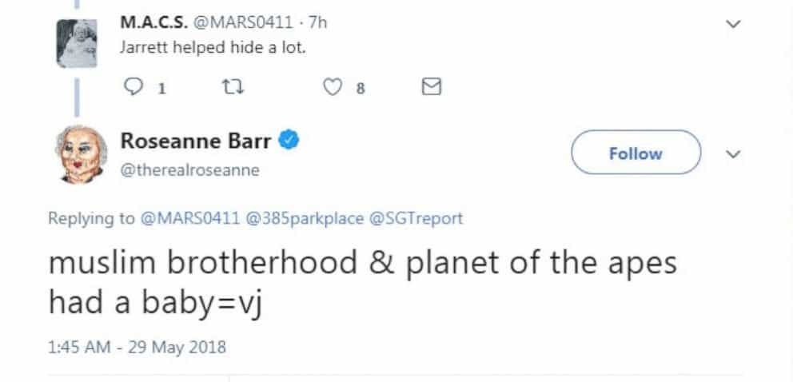
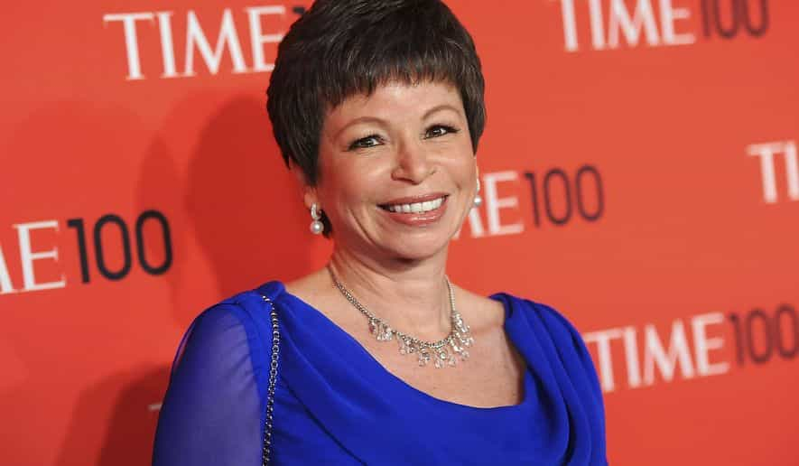
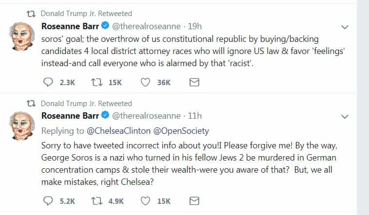

This account syndicates news from other media outlets.


ABC, in a stunning move, has decided to cancel its Roseanne revival following star Roseanne Barr’s racist tweet Tuesday.
“Roseanne’s Twitter statement is abhorrent, repugnant and inconsistent with our values, and we have decided to cancel her show,” ABC Entertainment president Channing Dungey said Tuesday.
Early Tuesday, star, head writer and executive producer Barr attacked Valerie Jarrett, a senior adviser to former President Barack Obama, in a since-deleted tweet in which she said “Muslim brotherhood & planet of the apes had a baby=vj.”


Barr subsequently apologized: “I apologize to Valerie Jarrett and to all Americans. I am truly sorry for making a bad joke about her politics and her looks. I should have known better. Forgive me — my joke was in bad taste.”
Walt Disney Co. CEO Bob Iger also weighed in on the decision to cancel Roseanne: “There was only one thing to do here, and that was the right thing,” he tweeted.
Added executive producer Tom Werner, whose company Carsey-Werner exec produced the original Roseanne and its revival: “I support ABC’s decision to cancel the show in the wake of Roseanne Barr’s most recent reprehensible tweets. Our goal was to promote constructive discussion about the issues that divide us. It represented the work of hundreds of talented people. I hope the good work done is not totally eclipsed by these abhorrent and offensive comments, and that Roseanne seeks the help she so clearly needs.”
Showrunner Bruce Helford added in a statement of his own: “On behalf of all the writers and producers, we worked incredibly hard to create an amazing show. I was personally horrified and saddened by the comments and in no way do they reflect the values of the people who worked so hard to make this the iconic show that it is.”
Barr’s tweet prompted a massive outcry across social media, with thousands condemning the actress-comedian’s comments and calling on ABC to cancel her series. The Disney-owned network’s decision to cancel the comedy marked the first time the network has taken action in response to one of Barr’s controversial tweets.

Axing the Roseanne revival was no small decision for ABC. The rebooted comedy debuted its nine-episode run midseason and finished as the TV season’s No. 1 scripted series on all of broadcast. Roseanne had been averaging a 5.5 rating among adults 18-49 and 19.3 million viewers with live-plus-3 lifts. With a full week of time-shifting, those numbers climbed to a 6.4 rating in the key demo and 22.1 million viewers. Either way, Roseanne was the highest-rated and most watched series of the broadcast season, eclipsing NBC’s This Is Us and CBS’ The Big Bang Theory — which had been in a heated battle for top status.
In response to Barr’s tweet, co-star and exec producer Sara Gilbert — who was the driving force behind the revival — blasted her longtime friend and colleague. “Roseanne’s recent comments about Valerie Jarrett, and so much more, are abhorrent and do not reflect the beliefs of our cast and crew or anyone associated with our show. I am disappointed in her actions to say the least,” she wrote on Twitter. “This is incredibly sad and difficult for all of us, as we’ve created a show that we believe in, are proud of, and that audiences love — one that is separate and apart from the opinions and words of one cast member.” Wanda Sykes, who served as a consultant on season one, also tweeted Tuesday that she would not be returning to the series following Barr’s racist tweet.
Roseanne was slated to return in the fall for an expanded 11th season of 13 episodes as ABC looked to build on the show’s momentum. In a victory lap of sorts, Barr was the centerpiece of ABC’s upfront presentation to Madison Avenue ad buyers earlier this month. The revival was part of a larger effort by Dungey — broadcast’s lone African-American network topper — to cater to the underserved community who turned out in force to elect Donald Trump. The success of the Roseanne revival has prompted other broadcast networks to pick up a wave of multicamera comedies in a larger push to program for middle America. (To that end, Fox revived Tim Allen comedy Last Man Standing a year after ABC’s cancellation.)
Roseanne has never shied away from taking on timely and controversial subjects. In the spirit of its original run, which had a history of addressing larger political and social issues, the revival famously opened its new season with an episode that explored the country’s divisive response to President Trump, whom Barr has publicly supported. The storyline between Roseanne Conner and her sister, Jackie (Laurie Metcalf), was designed to reflect the debate among Trump’s working-class base and spur a larger discussion. The May 22 season finale, likewise, set the stage to explore a larger debate about health care in America.
The reboot also found itself under the microscope earlier this season when a one-off joke taking aim at fellow ABC comedies Black-ish and Fresh Off the Boat was blasted as being “reductive” and “belittling.”
Don’t Miss: ROK Hits Primetime With A Segment On The Jimmy Kimmel Live Show (Video)